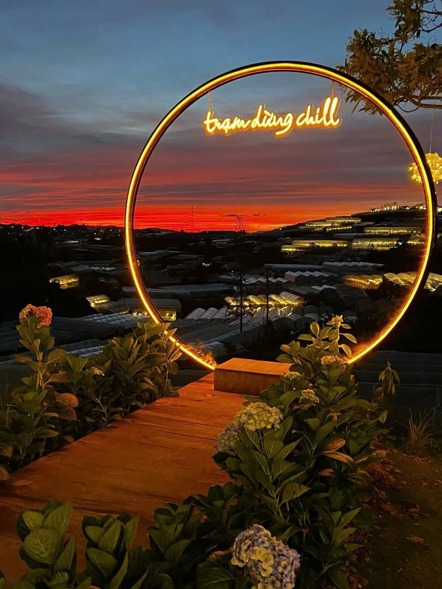
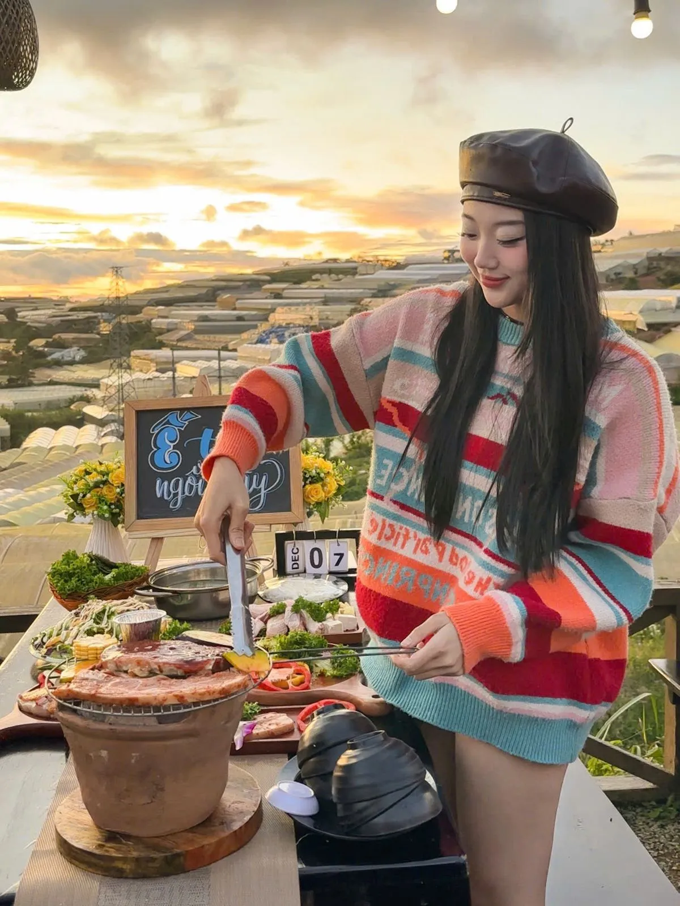
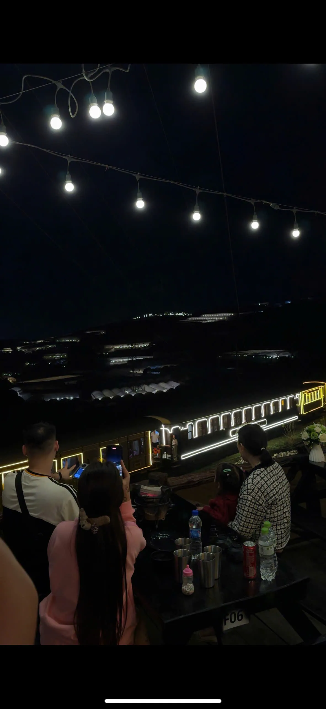

Vì sao Trạm Dừng Chill lý tưởng cho date night?
View triệu đô: Hoàng hôn → xe lửa → biển sao nhà lồng, 3 khoảnh khắc lãng mạn trong 1 buổi tối. Rất ít quán ăn ở Đà Lạt có thể mang đến cả 3 trải nghiệm view này cùng lúc.
Không gian riêng tư: Bàn ngoài trời thoáng đãng, không ồn ào. Các bàn được bố trí cách nhau vừa đủ để bạn và người thương có không gian riêng, thoải mái trò chuyện bên bếp nướng ấm áp.

Đồ ăn ngon: BBQ tươi, lẩu nóng, đồ uống mát lạnh — đủ combo cho buổi hẹn hò hoàn hảo.

Tip: Đặt bàn lúc 17:00 để ngắm hoàng hôn, rồi ở lại đến tối ngắm nhà lồng lên đèn!

Gợi ý set menu cho buổi hẹn hò 2 người
Để buổi date night thêm trọn vẹn, bạn có thể chọn set nướng cho 2 người tại Trạm Dừng Chill với giá chỉ từ 190.000đ. Set bao gồm các món nướng đặc sắc như bò Mỹ, gà nướng lá é, hải sản tươi sống cùng rau củ nướng. Thêm một phần lẩu nóng hổi để hai người cùng nhúng và trò chuyện — vừa ấm bụng vừa ấm lòng trong tiết trời se lạnh Đà Lạt.
Đừng quên gọi thêm đồ uống đặc biệt như trà đào cam sả hay sinh tố bơ Đà Lạt để hoàn thiện bữa tối lãng mạn.
Lịch trình date night hoàn hảo tại Đà Lạt
16:30: Đến quán sớm, chọn bàn view thung lũng và gọi đồ uống.
17:00 - 17:30: Ngắm hoàng hôn vàng rực phủ lên thung lũng — thời điểm lý tưởng để chụp ảnh cùng người thương.
17:30 - 18:00: Bắt đầu nướng BBQ, vừa ăn vừa ngắm xe lửa cổ chạy ngang qua bên dưới.
19:00+: Nhà lồng đồng loạt lên đèn, tạo nên biển sao lung linh giữa đêm. Đây là khoảnh khắc lãng mạn nhất trong ngày.
Mẹo đặt bàn cho buổi hẹn hò
Cuối tuần và dịp lễ quán thường đông, vì vậy hãy đặt bàn trước ít nhất 1 ngày để được chọn vị trí đẹp nhất. Nếu muốn bất ngờ nửa kia, bạn có thể nhờ quán setup thêm nến và hoa tại bàn — dịch vụ này hoàn toàn miễn phí khi đặt bàn trước. Liên hệ hotline 0989.765.070 để được tư vấn.